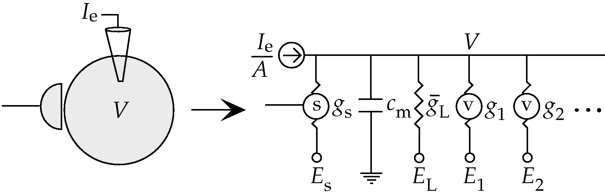
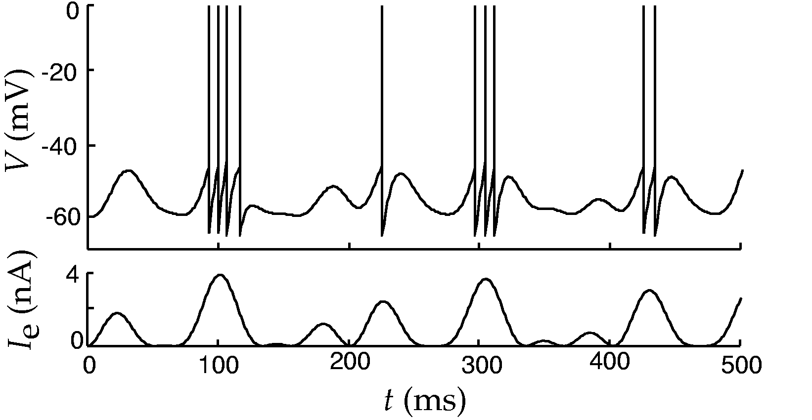
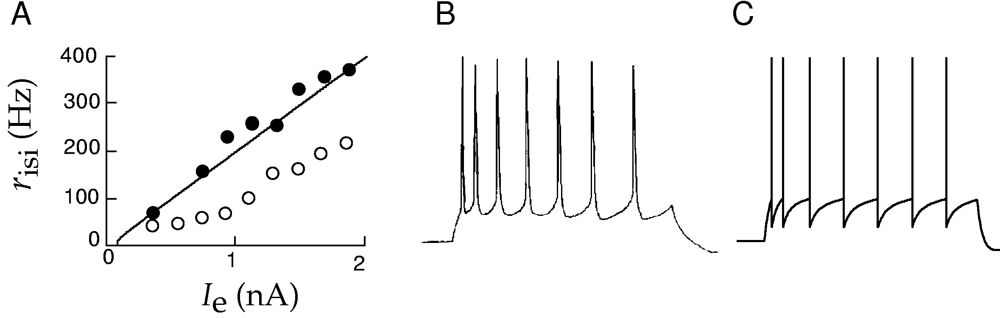
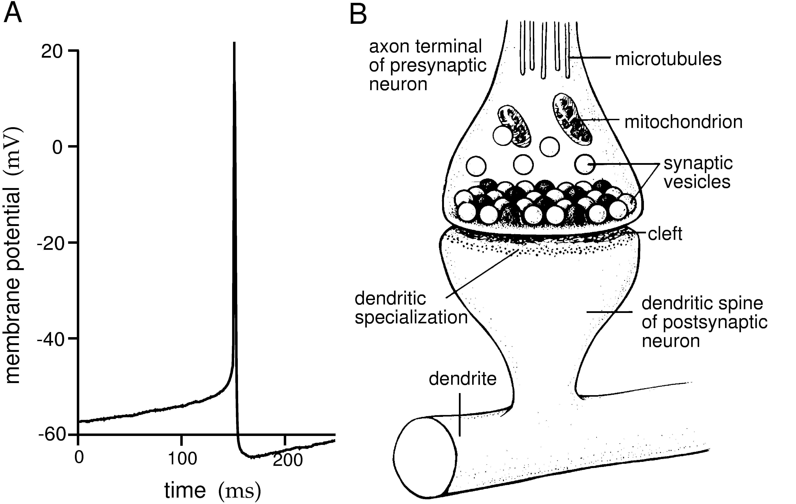
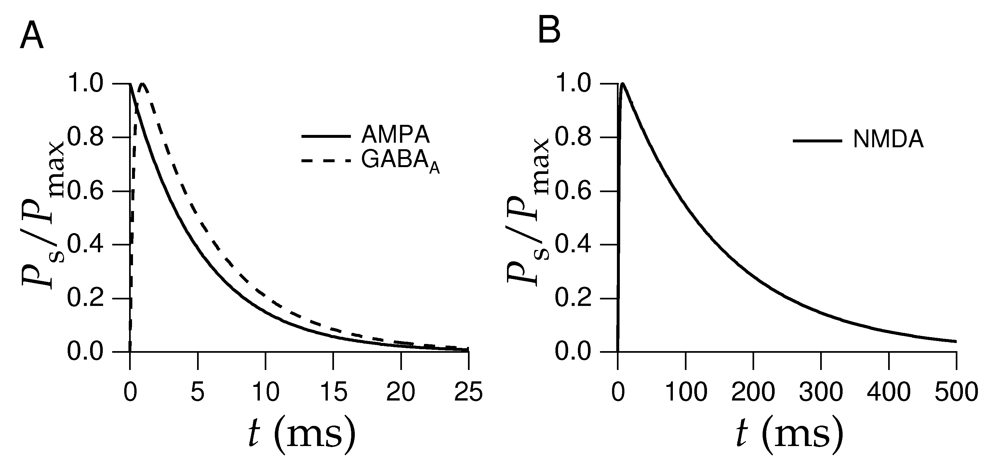
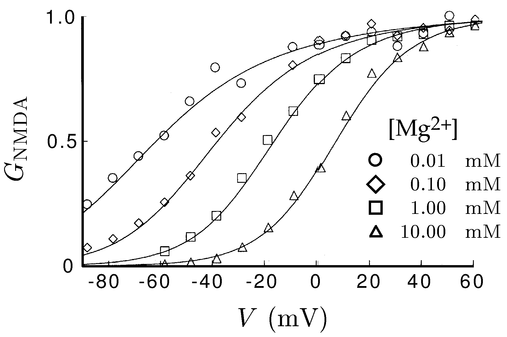
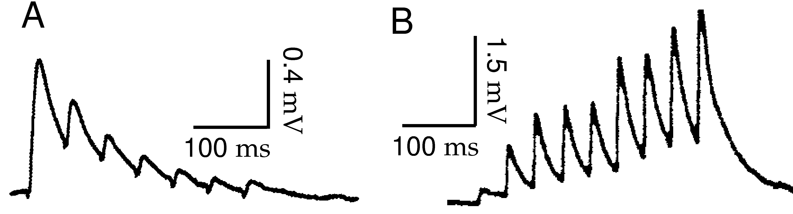
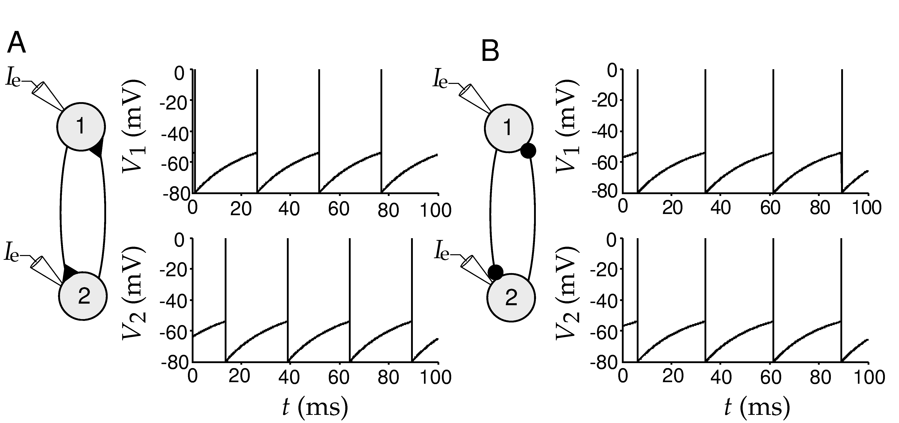
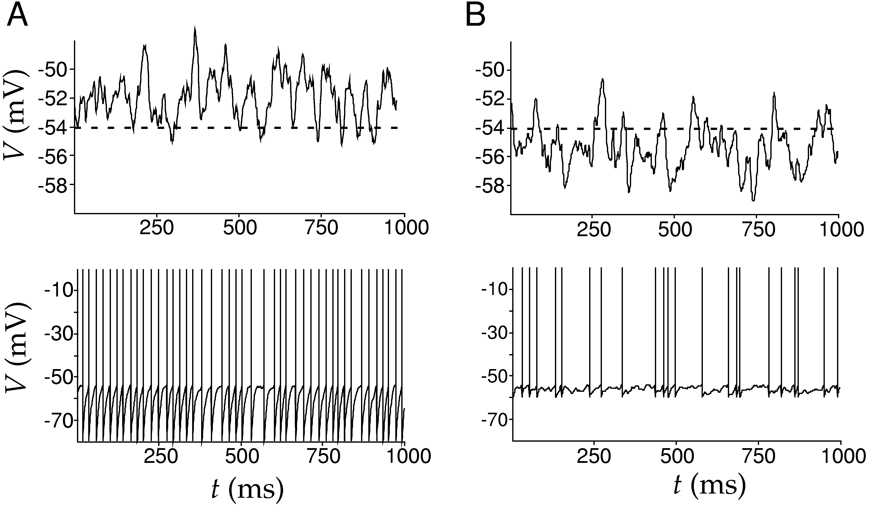

F6 · Integrate-and-fire neurons and synaptic input¶
At a glance
Length — two to three sittings — three distinct payloads (the LIF derivation and f-I curve, the Hodgkin-Huxley loss ledger, and conductance-based synapses) rather than one continuous argument · about 3–4 hours across two to three sittings Before this — F5 Reading — D&A ch. 5 — Integrate-and-Fire Models · Synaptic Conductances · Synapses on Integrate-and-Fire Neurons
Files for this lesson
Open on any device; nothing here needs a login.
Also: errata · all exercise code and data · all figures
Lecture¶
Reading alongside Dayan & Abbott chapter 5, the integrate-and-fire and synaptic sections. Figures are the book's own, by number.
| Chapter section | Here |
|---|---|
| 5.4 Integrate-and-Fire Models | The passive IF reduction, the f-I curve, adaptation and refractoriness |
| 5.5–5.7 Voltage-dependent conductances, Hodgkin-Huxley, channel models | Assumed known — see F5 |
| 5.8 Synaptic Conductances | Open probability, AMPA/NMDA/GABA kinetics, short-term plasticity |
| 5.9 Synapses on Integrate-and-Fire Neurons | Conductance-based input, shunting, regular vs. irregular firing |
A change of preparation, not an error¶
The preceding lesson worked entirely in Hodgkin and Huxley's own numbers: squid giant axon, 6.3 °C, a membrane time constant around 3.3 ms. Everything below uses a different preparation — a mammalian cortical neuron at body temperature, with a membrane time constant around 10 ms and a membrane resistance around 10 MΩ. These are not typos relative to F5; squid axon and mammalian cortex are different tissues at different temperatures, and \(\tau_m = r_m c_m\) varies accordingly. Keep the two number sets in separate mental boxes.
From conductances to a threshold rule¶
Section 5.6 built the action potential out of three voltage-dependent conductances cycling through open and closed states. That machinery is expensive to simulate and, for many questions, beside the point — what matters is when the neuron fires, not the exact shape of the 1 ms upstroke. The integrate-and-fire model, going back to Lapicque in 1907, throws the upstroke away entirely and replaces it with bookkeeping: integrate the subthreshold membrane equation, and the moment \(V\) reaches a threshold \(V_{th}\), declare a spike and reset \(V\) to \(V_{reset} < V_{th}\).
The subthreshold part is just the single-compartment membrane equation from F5 with every active conductance stripped down to the one passive leak term, \(i_m = g_L(V - E_L)\). Dividing through by \(g_L\) turns \(c_m g_L^{-1}\) into the familiar \(\tau_m\), giving the model's one governing line:
With \(I_e\) held constant, this is a linear first-order ODE with a textbook solution — exponential relaxation toward \(E_L + R_m I_e\) starting from whatever \(V\) the last reset left behind. The threshold-and-reset rule is layered on top of that solution, not inside it.

Figure 5.4 — The equivalent circuit reduction — a neuron as one resistor and one capacitor in parallel. From Dayan & Abbott, Theoretical Neuroscience, reproduced from the authors' teaching materials.

Figure 5.5 — A passive integrate-and-fire trace: injected current below, membrane potential with pasted-on spikes above. From Dayan & Abbott, Theoretical Neuroscience, reproduced from the authors' teaching materials.
The interspike interval, solved by hand¶
Because the subthreshold trajectory between two spikes is just that one exponential, the time between spikes can be written in closed form. Starting at \(V(0) = V_{reset}\) and asking when \(V\) first reaches \(V_{th}\) gives an equation with a single unknown, \(t_{isi}\), sitting inside a \(\exp(-t/\tau_m)\). Solving it is algebra, not simulation: isolate the exponential, take a log, and the interspike interval drops out as a closed-form function of \(E_L\), \(V_{th}\), \(V_{reset}\), \(R_m I_e\), and \(\tau_m\). Its reciprocal is the interspike-interval firing rate \(r_{isi}\).
Two features of that formula are worth holding onto before doing the arithmetic. First, it only applies once \(R_m I_e\) pushes the asymptotic potential past threshold — below that, the neuron never fires and \(r_{isi} = 0\). Second, for large \(I_e\) the log can be linearized, and the firing rate becomes approximately linear in \(I_e\) — slope set by \(\tau_m\) and the threshold-to-reset gap, intercept set by how far \(E_L\) sits below \(V_{th}\).
Try this with the book's own figure-5.5 parameters first, where \(E_L = V_{reset} = -65\) mV, \(V_{th} = -50\) mV, \(\tau_m = 10\) ms, \(R_m = 10\) MΩ: compute \(R_m I_e\), plug the four voltages into the log formula, and get \(t_{isi}\) in milliseconds. Then rework it for a case where reset and rest are not equal — that one extra asymmetry is where the exercises at the end of this lesson live.
Where the reduction breaks¶
Figure 5.6 overlays this formula against current-clamp recordings from a real visual-cortex pyramidal cell, and the fit is good for the first couple of spikes after a current step. It degrades immediately after: real cortical neurons slow down over the following several hundred milliseconds, settling to a lower steady-state rate — spike-rate adaptation. The passive model, built from a single fixed leak conductance, has no mechanism that changes its own behavior after a spike, so it cannot adapt on its own.

Figure 5.6 — Interspike-interval firing rate vs. injected current for the model and for a real cortical neuron, including spike-rate adaptation. From Dayan & Abbott, Theoretical Neuroscience, reproduced from the authors' teaching materials.
The chapter's fix is to bolt on what the biophysics half would call a slow, spike-activated potassium conductance: a hyperpolarizing current that steps up by a fixed increment on every spike and decays back to zero with its own time constant. That is a discarded mechanism being reintroduced by hand, not something the leaky-integrator reduction produces for free. The same logic covers refractoriness — absent until added, either as an explicit no-firing window after reset or as a large, fast-decaying conductance that briefly clamps \(V\) toward \(E_K\).
Synaptic conductances: three transmitter systems, three time courses¶
Section 5.8 turns a synapse into the same kind of object as a voltage-dependent channel: a maximal conductance times an open probability, \(g_s = \bar g_s P\), with \(P\) split into a presynaptic release factor \(P_{rel}\) and a postsynaptic open-channel factor \(P_s\). \(P_s\) obeys a binding-and-unbinding equation structurally identical to a gating variable's, driven by a brief pulse of transmitter concentration in the cleft rather than by voltage.

Figure 5.14 — A fitted postsynaptic current showing the rapid-rise, slower-decay shape that the binding model reproduces. From Dayan & Abbott, Theoretical Neuroscience, reproduced from the authors' teaching materials.
Different receptors give that pulse a different shape. AMPA is fast in and fast out — a single exponential decay around 5 ms is a typical fit. GABA-A decays on a similar scale (figure 5.15 uses a value near 6 ms) and sets \(E_s\) near the chloride reversal potential, well below threshold. NMDA is the slow outlier, decaying over roughly 150 ms, and carries an additional voltage-dependent magnesium block that only lifts once the postsynaptic cell is already depolarized — a coincidence detector between pre- and postsynaptic activity rather than a plain fast relay.

Figure 5.15 — Open-probability time courses for AMPA, GABA-A, and NMDA side by side. From Dayan & Abbott, Theoretical Neuroscience, reproduced from the authors' teaching materials.

Figure 5.16 — The NMDA conductance's voltage- and magnesium-dependent gate. From Dayan & Abbott, Theoretical Neuroscience, reproduced from the authors' teaching materials.
Repeated presynaptic firing can also change \(P_{rel}\) itself, independent of the postsynaptic kinetics above — depression and facilitation are both modeled as the release probability relaxing toward and away from a baseline with its own time constant.

Figure 5.17 — Depression at one cortical synapse and facilitation at another, recorded under identical stimulation. From Dayan & Abbott, Theoretical Neuroscience, reproduced from the authors' teaching materials.
Conductance-based input and the centre of this half: shunting¶
Plugging a synaptic conductance into the integrate-and-fire equation gives
This is a different object from a current-based synapse that simply adds a fixed \(I_{syn}(t)\) to the right-hand side. Here the synaptic term is a conductance multiplied by a driving force, \((V - E_s)\), and that driving force is exactly zero whenever \(V\) happens to sit at the synapse's own reversal potential. A GABA-A synapse with \(E_s\) close to the resting potential can be wide open, passing essentially no net current at rest, and still be doing something to the neuron.
What it is doing becomes visible by collecting every term proportional to \(V\) on one side. Dividing the equation through by \((1 + r_m g_s P_s)\) recovers the same exponential-relaxation form as before, but with \(\tau_m\) and every other right-hand term — \(E_L\), the electrode current — divided by that same factor. An open channel that contributes no net current at \(V = E_s\) still adds conductance, and added conductance means a shorter effective time constant, regardless of which direction \((V-E_s)\) happens to be pushing. This conductance effect, distinct from whatever current the synapse carries, is what the chapter calls shunting.
The divisive appearance is specific to voltage: it reduces how far the membrane potential deviates from its effective new resting level. Firing rate is a different question. Holding \(P_s\) roughly constant, shunting is equivalent to replacing \(R_m\) with \(R_m/(1+r_m g_s P_s)\) inside the already-derived rate formula, where \(R_m\) enters only through an additive constant — so a shunting synapse's effect on firing rate is subtractive, not divisive, even though its effect on membrane voltage is divisive. A conductance that would be invisible to a purely current-based model (no net current at rest) is doing real computational work in a conductance-based one. That is why the distinction is not cosmetic.

Figure 5.20 — Two coupled integrate-and-fire neurons: excitatory synapses drive alternation, inhibitory synapses drive synchrony. From Dayan & Abbott, Theoretical Neuroscience, reproduced from the authors' teaching materials.
Two firing regimes, one network¶
Section 5.9 closes by driving a model neuron with a thousand excitatory and two hundred inhibitory Poisson input trains and looking at where the mean membrane potential sits relative to threshold. Average drive above threshold produces a regular, clock-like train, paced by the cell's own charging curve. Average drive below threshold, with spikes occurring only on upward fluctuations, produces an irregular train — closer, by the coefficient of variation, to real in-vivo cortical recordings than the regular mode is.

Figure 5.21 — Regular vs. irregular firing: mean membrane potential above threshold versus below it, with the corresponding spike trains. From Dayan & Abbott, Theoretical Neuroscience, reproduced from the authors' teaching materials.
Working through it¶
After this reading, derive the closed-form interspike interval from the subthreshold solution rather than quoting it, then add a refractory period on top and check how the rate-vs-current curve bends at high input. Run the leaky integrate-and-fire model against a Hodgkin-Huxley simulation on the same current step and compare more than firing rate alone. Build one current-based and one conductance-based inhibitory synapse onto the same cell and watch what each does near the inhibitory reversal potential. The book's own end-of-chapter exercises for these two sections are good checks before moving on.
Lesson spec¶
Goal: Derive the leaky integrate-and-fire model as a reduction of the single-compartment model from F5 and work its f-I curve with real numbers. State explicitly, with one concrete cost each, what the reduction discards. Replace current-based synaptic input with conductance-based input and show why the difference is not cosmetic.
Scope — what the lesson covers
- LIF derived from the membrane equation, with tau_m, threshold and reset as explicit parameters rather than fitted constants
- The f-I curve derived from the subthreshold solution and evaluated at two or three real current values; the refractory period added and its effect on saturation shown numerically
- What LIF discards relative to Hodgkin-Huxley — spike shape, adaptation, bursting — with one named phenomenon lost per omission
- Synaptic input as a conductance rather than a current: shunting inhibition and the input-dependent effective membrane time constant, derived rather than asserted
- AMPA, NMDA and GABA-A time courses in milliseconds and their reversal potentials, tabulated
- Not covered: reset-mode variants and short-term plasticity (A4), wiring these units into networks (F8), learning rules on these synapses (F9)
You should be able to answer: 1. With V_rest = −65 mV, V_threshold = −50 mV, V_reset = −70 mV, tau_m = 10 ms and R = 10 megohm, solve for the interspike interval at an injected current of 2 nA. 2. Adding a 2 ms refractory period to that interval, what is the firing rate in Hz, and at what input current does the refractory period start to dominate the curve's shape? 3. Name one spiking phenomenon a real cortical neuron shows that plain LIF cannot produce, and identify which discarded mechanism is responsible. 4. Derive why a synapse modelled as a conductance times a driving force can shorten the effective membrane time constant even when it delivers no net current at rest, and name the effect. 5. Order AMPA, NMDA and GABA-A by decay time constant, with a millisecond value for each.
Feeds: F8 (networks are built from these units), F9 (plasticity acts on this synaptic machinery), A4 (which extends reset modes and short-term plasticity).
Done when: You derives the LIF f-I curve with a refractory period from the bare membrane equation, states the Hodgkin-Huxley trade-offs with a named phenomenon per loss, and explains shunting inhibition as a consequence of conductance-based input.
Authors' exercises¶
Dayan & Abbott wrote exercise sets for every chapter and publish them free at gatsby.ucl.ac.uk/~dayan/book. This lesson's are in exercises/c5.pdf (chapter 5), with any code and data under exercises/exercises/c5/. Work the integrate-and-fire and synapse ones — the biophysics ones belong to F5.
They are the authors' problems, not this course's, so they take precedence where the two overlap: if an exercise here duplicates one of theirs, do theirs. They are written for MATLAB; translating to numpy is part of the work and is not hard. The teacher agent has no answer key for these — it marks by reading your code and output, and says so rather than pretending to a key it does not have.
Coursework¶
Consume, then apply, then refine: guided reading (Piece 3) → derivation (Piece 1) → simulation (Piece 2) → written explanation (Piece 4). Pieces are numbered by type, not sequence.
Coverage map
| Piece | Type | Lesson acceptance criteria addressed |
|---|---|---|
| 1 | derivation | 1 (ISI at 2 nA), 2 (refractory-limited rate and dominance current), 4 (shunting inhibition derived) |
| 2 | simulation | 3 (LIF vs HH divergence observed), 4 (shunting made visible in a voltage trace) |
| 3 | guided reading | 3 (HH loss ledger — reading side), 5 (AMPA/NMDA/GABA-A time courses and reversal potentials) |
| 4 | written explanation | 1, 2, 3, 4, 5 (synthesis) |
Type: derivation · Time: 70–90 min
Learning goals - Derive the LIF equation as a reduction of the F5 single-compartment membrane equation, with tau_m, threshold, and reset as explicit parameters. - Solve the subthreshold LIF equation and use it to derive the interspike interval (ISI) and firing rate as functions of injected current. - Add a refractory period and find the current at which it starts to reshape the f-I curve, with a numeric criterion. - Derive, from the membrane equation with a conductance-based synaptic term, why a conductance synapse changes the effective membrane time constant even when it carries no net current at rest — and name the effect.
Task
Task A — LIF and its f-I curve.
1. Start from the single-compartment membrane equation from F5: C dV/dt = -g_L(V - E_L) + I_e(t). Divide through by g_L and define tau_m = C/g_L = R C (R = 1/g_L) to get the standard LIF form: tau_m dV/dt = -(V - V_rest) + R I_e, with V_rest = E_L. State in one sentence why this is a reduction, not a new model: what part of the F5 equation did you just delete?
2. Solve this linear ODE for constant I_e, starting from V(0) = V_reset. Show the general subthreshold solution V(t), and identify the steady-state (asymptotic) voltage V_ss = V_rest + R I_e.
3. Using parameters V_rest = -65 mV, V_threshold = -50 mV, V_reset = -70 mV, tau_m = 10 ms, R = 10 MΩ, and I_e = 2 nA: compute V_ss, then solve for the time t_isi at which V(t) first reaches V_threshold. Give t_isi in ms and the corresponding firing rate 1/t_isi in Hz.
4. Add an absolute refractory period t_ref = 2 ms (after each spike, V is clamped to V_reset for t_ref before the subthreshold equation resumes). Give the new interspike interval and firing rate.
5. Find the injected current I_e at which t_ref equals t_isi (i.e., the refractory period accounts for exactly half the total ISI at that point). Show your algebra symbolically before plugging in numbers. State in one sentence what happens to the f-I curve's shape above this current, and what value the firing rate approaches as I_e → ∞.
Task B — conductance-based synapse and shunting inhibition.
6. Extend the membrane equation with one synaptic conductance: C dV/dt = -g_L(V - E_L) - g_syn(t)(V - E_syn) + I_e. Collect terms in V and show that this is still a linear ODE in V, with an effective time constant tau_eff = C / (g_L + g_syn) and a new effective resting point. Do this algebraically — do not just state the result.
7. Now set E_syn = V_rest (an inhibitory synapse reversing right at rest, e.g. GABA-A near -65 mV) and evaluate the synaptic current -g_syn(V - E_syn) at V = V_rest. What is its numeric value, for any g_syn? Given that answer, explain how tau_eff can still be shorter than tau_m — walk through the algebra of tau_eff versus tau_m explicitly, don't just assert it changes.
8. Using C = 100 pF, g_L = 10 nS (so tau_m = 10 ms), and an inhibitory conductance g_syn = 10 nS with E_syn = V_rest: compute tau_eff numerically. Name the phenomenon this demonstrates.
Deliverable
Handwritten or typed pen-and-paper derivation for Tasks A and B, in order, showing every algebraic step (not just final formulas) and every substitution of numbers with units carried through. Final numeric answers stated on their own line, e.g. t_isi = 16.09 ms.
Rubric — how this is marked
| Band | Criteria |
|---|---|
| Strong | All 8 steps present with correct algebra and correct final numbers (within rounding); Task A step 5 shown symbolically before the numeric current is computed; Task B step 7 explicitly evaluates the driving force at rest before arguing about tau_eff, not just asserting shunting occurs. |
| Adequate | LIF reduction, subthreshold solution, and Task A criteria 1–2 numbers correct; refractory-dominance current attempted with correct method even if arithmetic slips; Task B derives tau_eff = C/(g_L+g_syn) correctly but the "zero net current, shorter tau anyway" argument is asserted rather than derived from the algebra. |
| Not yet | Formulas copied without derivation steps; numeric answers wrong or missing units; Task B treats shunting as "inhibition that also lowers V" rather than a time-constant effect. |
Grader key hidden
The marking criteria for this piece are in the teacher build.
Type: simulation · Time: 60–75 min
Learning goals - Run LIF and Hodgkin-Huxley side by side on the same injected-current sweep and read off where the LIF abstraction holds and where it breaks. - Observe a concrete case of a phenomenon LIF cannot produce, as a simulation result rather than a memorized fact. - Watch shunting inhibition directly: a conductance-based inhibitory input that delivers ~zero net current at rest but still visibly shrinks and speeds up an EPSP, compared with a current-based synapse that does nothing when matched to zero current at rest.
Task
Write and run a self-contained Python script (numpy only, no downloads) with two parts.
Part A. Implement hh_rate(I): standard Hodgkin-Huxley (C=1 µF/cm², g_Na=120, g_K=36, g_L=0.3 mS/cm², E_Na=50, E_K=-77, E_L=-54.4 mV, standard alpha/beta gating kinetics) with a constant injected current density I (µA/cm²), Euler-integrated at dt=0.01 ms over 300 ms, discarding the first 100 ms as settling time, counting upward threshold crossings through V=0 mV. Implement lif_rate(I): the LIF from Piece 1 (same parameters, t_ref=2 ms), same integration and counting scheme, with I in nA. Sweep both across a current range that spans each model's rheobase up to several times over, and print firing rate vs. current for each. Identify: (a) the current near which each model's firing rate turns on from zero, and whether that onset is gradual or abrupt; (b) whether either model's rate ever drops back toward zero at high current, and if so, why (inspect the gating variables, not just the voltage, at that current).
Part B. Implement a passive (non-spiking) neuron (C=100 pF, g_L=10 nS, V_rest=-65 mV) receiving an AMPA-like excitatory conductance pulse (E_exc=0 mV, alpha-function shape, peak 5 nS, tau=2 ms, onset t=50 ms) and, in a separate condition, a concurrent inhibitory conductance step (g_inh=50 nS, E_inh=-65 mV — exactly at rest — active from t=45 to 80 ms). Run three conditions: no inhibition, conductance-based inhibition as above, and the "matched" current-based inhibition (a constant current equal to g_inh × (E_inh − V_rest), computed once at rest). Measure and report the EPSP peak (mV above rest) in each condition.
Deliverable
The script (< 100 lines), its printed output, and 4–6 sentences stating: the LIF and HH onset behavior (gradual vs. abrupt, with the currents), what happens to the HH rate at high current and which gating variable is responsible, and the three EPSP peak values from Part B with a one-line explanation of why the current-based condition differs from the conductance-based one.
Rubric — how this is marked
| Band | Criteria |
|---|---|
| Strong | Both models implemented correctly and swept over a broad enough range to see HH's rheobase and its high-current rollback; the HH rollback is diagnosed by inspecting a gating variable (not just "rate went to zero"); Part B reports three distinct, correctly computed EPSP peaks with the current-based case identified as ~equal to baseline. |
| Adequate | f-I curves computed and roughly match expected shapes; high-current HH behavior noted but not diagnosed mechanistically; Part B run with at least the no-inhibition and conductance-inhibition conditions compared correctly. |
| Not yet | Only one model implemented, or integration is unstable (NaN/blow-up) without being caught and fixed; Part B skipped or the current-based "matched" condition not computed from g_inh × (E_inh − V_rest). |
Grader key hidden
The marking criteria for this piece are in the teacher build.
Type: guided reading · Time: 40–50 min
Learning goals - Locate, in the text, what the integrate-and-fire reduction is explicitly said to give up relative to conductance-based (HH-type) models. - Extract the standard synaptic conductance time courses and reversal potentials the text gives for AMPA, NMDA, and GABA-A.
Task
Read D&A ch. 5, sections Integrate-and-Fire Models, Synaptic Conductances, and Synapses on Integrate-and-Fire Neurons. Answer:
- What does Integrate-and-Fire Models say the model omits relative to a full conductance-based (Hodgkin-Huxley-style) description? List at least two specific omissions the text names (not your own guesses).
- What example phenomena does the text associate with the richer conductance-based models that a bare integrate-and-fire neuron cannot reproduce (e.g., adaptation, bursting, or others it names)?
- In Synaptic Conductances, what functional form does the text use for a synaptic conductance's time course (e.g., single-exponential, alpha function, or difference-of-exponentials), and what parameters does it define for it?
- What decay time constant(s) and reversal potential does the text give for AMPA-type synapses? For NMDA-type? For GABA-A-type? (If the text gives a range or a specific worked value, record it exactly as given, with units.)
- In Synapses on Integrate-and-Fire Neurons, how does the text define the total synaptic conductance driving the neuron, and how is it combined with the leak conductance in the membrane equation?
Deliverable
Five numbered answers, each 1–4 sentences, with a note of which subsection each answer came from. Direct quotes are welcome but not required; paraphrase in your own words is fine as long as the content is traceable to the named section.
Rubric — how this is marked
| Band | Criteria |
|---|---|
| Strong | All 5 answered with content specific to the named sections (not generic neuroscience knowledge); Q4 gives numeric values with units for all three synapse types; Q1–2 name concrete omitted phenomena rather than a vague "it's simplified." |
| Adequate | 4 of 5 answered correctly; Q4 has values for at least two of the three synapse types; answers are traceable to the right sections even if brief. |
| Not yet | Answers are generic (not clearly drawn from these sections), Q4 has no numeric values, or fewer than 3 questions answered. |
Grader key hidden
The marking criteria for this piece are in the teacher build.
Type: written explanation · Time: 30–40 min
Learning goals - Synthesize the derivation, simulation, and reading into a single coherent account of what LIF is, what it costs, and why conductance-based synapses are not a cosmetic variant of current-based ones.
Task
Write 300–600 words covering, in your own words:
1. How the LIF model is obtained from the full membrane equation, and what tau_m, threshold, and reset represent physically.
2. The f-I curve you derived and simulated: state the ISI and rate at I_e = 2 nA, the effect of adding a 2 ms refractory period, and the current at which the refractory period starts to dominate the curve's shape.
3. One named phenomenon (from your simulation observation) that plain LIF cannot produce, and the mechanism HH has that LIF discards to lose it.
4. Why a conductance-based synapse can shorten the effective membrane time constant while delivering ~zero net current at rest — the shunting inhibition argument, stated in your own words, referencing your Part B numbers.
5. The AMPA/NMDA/GABA-A ordering by decay time constant, with your recorded values.
Deliverable
A single prose document, 300–600 words, no bullet-point dumping of the five numbered points — an integrated explanation a labmate could read without also having your derivation and script in hand.
Rubric — how this is marked
| Band | Criteria |
|---|---|
| Strong | All 5 points present, correct, and integrated into connected prose (not five disconnected paragraphs answering five questions); the shunting explanation correctly separates "current at rest" (zero) from "conductance's effect on tau_eff" (nonzero); numbers from your own derivation/simulation are used, not generic textbook numbers. |
| Adequate | All 5 points present with correct content but written as a checklist rather than connected prose; minor numeric imprecision. |
| Not yet | Missing points, numbers not carried over from your own work, or the shunting explanation conflates "delivers no current" with "has no effect." |
Grader key hidden
The marking criteria for this piece are in the teacher build.
A note on parameters before you start¶
F5 worked in Hodgkin-Huxley's numbers — a squid giant axon at 6.3 °C, where the membrane time constant is about 3.3 ms. This lesson uses tau_m = 10 ms, which is a mammalian cortical neuron at body temperature. Neither is wrong and neither is a typo: they are different preparations, and the integrate-and-fire parameters here are chosen to match the cells the rest of the course models. If a number from F5 does not reproduce here, check the preparation before you check your arithmetic.
Completion bar¶
All four pieces at Adequate or better, with every acceptance-criterion number (ISI, refractory rate, dominance current, EPSP peaks, tau_eff, AMPA/NMDA/GABA-A ordering) reproduced correctly in at least one piece and referenced consistently across the others. F6 is done when you can, without notes, state the LIF f-I curve from the bare membrane equation, name one HH-only phenomenon LIF cannot produce and why, and explain shunting inhibition as a tau_eff effect rather than a voltage-shift effect.